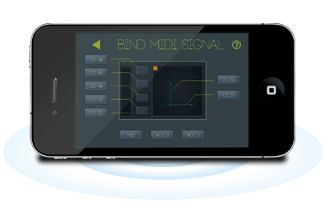

什么是MIDI Pad
MIDI Pad是一个无线MIDI控制器. 它提供了一个 X-Y Pad, 一个推子和四个按钮. 不仅如此, 它还能把麦克风和加速度传感器的信号转换成为MIDI信号.
无论你玩的是Hiphop, Techno, Trance还是DnB, MIDI Pad都能帮助你点燃现场. 或者, 你是一个传统的音乐制作人, MIDI Pad依然可以连入您的Logic Pro等DAW软件, 让iPhone变成你的表情踏板.

功能列表
- 一个XY Pad 同时控制两个MIDI信号
- 四个可编程按钮
- 一个推子
- 麦克风转MIDI信号
- 动作转MIDI信号
- 使用WIFI无线连接
- 可用于: Ableton Live, Logic, Pro Tools, Digital Performer, Cubase, Mackie Tracktion, Modul8, Motion, Reason
CC 预设
- XY Pad axis X: CC51 axis Y: CC50
- 按钮 CC46, CC47, CC48, CC49
- 推子 CC52
- Microphone 信号 CC53
- 加速度信号 X: CC54 Y: CC55
有困难, 找民警! oh, 当然找民警是木有用的, 不如在下面留言, 我们收到就回复.
使用DAW Remote遇到困难了? 想要更多的功能? 亲, 欢迎留言.